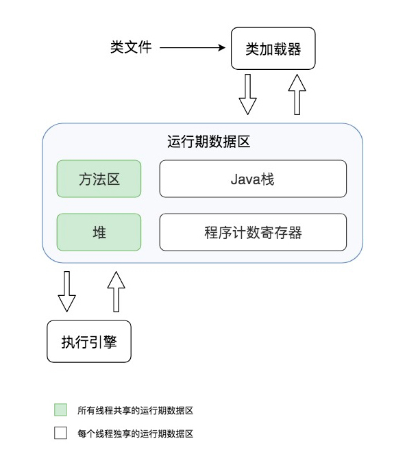
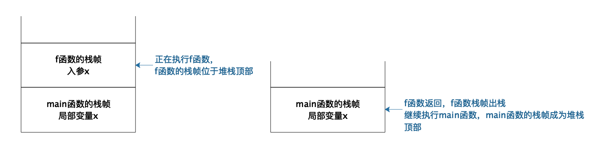
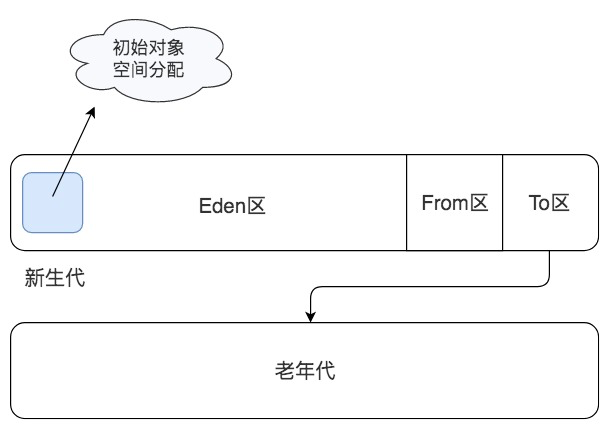
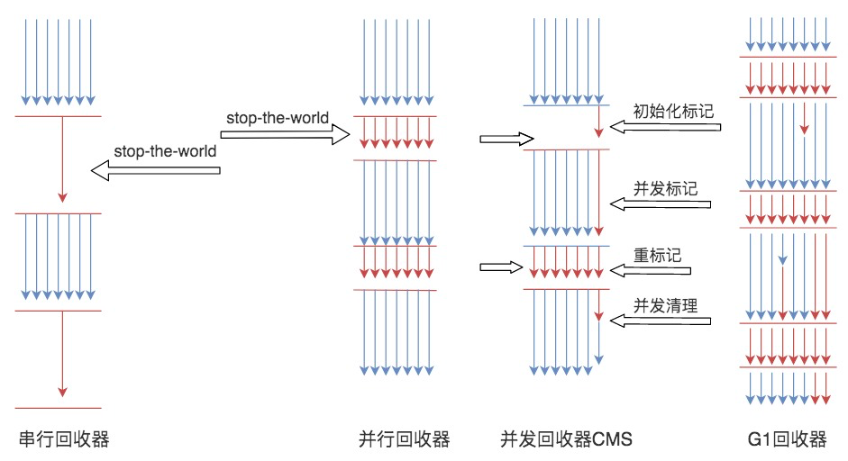

- 00 开篇词 掌握软件开发技术的第一性原理.md
- 01 程序运行原理：程序是如何运行又是如何崩溃的？.md
- 02 数据结构原理：Hash表的时间复杂度为什么是O(1)？.md
- 03 Java虚拟机原理：JVM为什么被称为机器（machine）？.md
- 04 网络编程原理：一个字符的互联网之旅.md
- 05 文件系统原理：如何用1分钟遍历一个100TB的文件？.md
- 06 数据库原理：为什么PrepareStatement性能更好更安全？.md
- 07 答疑 Java Web程序的运行时环境到底是怎样的？.md
- 07 编程语言原理：面向对象编程是编程的终极形态吗？.md
- 08 软件设计的方法论：软件为什么要建模？.md
- 09 软件设计实践：如何使用UML完成一个设计文档？.md
- 10 软件设计的目的：糟糕的程序员比优秀的程序员差在哪里？.md
- 11 软件设计的开闭原则：如何不修改代码却能实现需求变更？.md
- 12 软件设计的依赖倒置原则：如何不依赖代码却可以复用它的功能？.md
- 13 软件设计的里氏替换原则：正方形可以继承长方形吗？.md
- 14 软件设计的单一职责原则：为什么说一个类文件打开最好不要超过一屏？.md
- 15 软件设计的接口隔离原则：如何对类的调用者隐藏类的公有方法？.md
- 16 设计模式基础：不会灵活应用设计模式，你就没有掌握面向对象编程.md
- 17 设计模式应用：编程框架中的设计模式.md
- 18 反应式编程框架设计：如何使程序调用不阻塞等待，立即响应？.md
- 19 组件设计原则：组件的边界在哪里？.md
- 20 答疑 对于设计模式而言，场景到底有多重要？.md
- 20 领域驱动设计：35岁的程序员应该写什么样的代码？.md
- 21 分布式架构：如何应对高并发的用户请求.md
- 22 缓存架构：如何减少不必要的计算？.md
- 23 异步架构：如何避免互相依赖的系统间耦合？.md
- 24 负载均衡架构：如何用10行代码实现一个负载均衡服务？.md
- 25 数据存储架构：如何改善系统的数据存储能力？.md
- 26 搜索引擎架构：如何瞬间完成海量数据检索？.md
- 27 微服务架构：微服务究竟是灵丹还是毒药？.md
- 28 高性能架构：除了代码，你还可以在哪些地方优化性能？.md
- 29 高可用架构：我们为什么感觉不到淘宝应用升级时的停机？.md
- 30 安全性架构：为什么说用户密码泄漏是程序员的锅？.md
- 31 大数据架构：大数据技术架构的思想和原理是什么？.md
- 32 AI与物联网架构：从智能引擎到物联网平台.md
- 33 区块链技术架构：区块链到底能做什么？.md
- 33 答疑 互联网需要解决的技术问题是什么？.md
- 34 技术修炼之道：同样工作十几年，为什么有的人成为大厂架构师，有的人失业？.md
- 35 技术进阶之道：你和这个星球最顶级的程序员差几个等级？.md
- 36 技术落地之道：你真的知道自己要解决的问题是什么吗？.md
- 37 技术沟通之道：如何解决问题？.md
- 38 技术管理之道：你真的要转管理吗？.md
- 38 答疑 工作中的交往和沟通，都有哪些小技巧呢？.md
- 加餐 软件设计文档示例模板.md
- 结束语 期待未来的你，成为优秀的软件架构师.md
03 Java虚拟机原理：JVM为什么被称为机器（machine）？
人们常说，Java是一种跨平台的语言，这意味着Java开发出来的程序经过编译后，可以在Linux上运行，也可以在Windows上运行；可以在PC、服务器上运行，也可以在手机上运行；可以在X86的CPU上运行，也可以在ARM的CPU上运行。
因为不同操作系统，特别是不同CPU架构，是不可能执行相同的指令的。而Java之所以有这种神奇的特性，就是因为Java编译的字节码文件不是直接在底层的系统平台上运行的，而是在Java虚拟机JVM上运行，JVM屏蔽了底层系统的不同，为Java字节码文件构造了一个统一的运行环境。JVM本质上也是一个应用程序，启动以后加载执行Java字节码文件。JVM的全称是Java Virtual Machine，你有没有想过，这样一个程序为什么被称为机器（Machine）呢？
其实，如果回答了这个问题，也就了解了JVM的底层构造了。这样在进行Java开发的时候，如果遇到各种问题，都可以思考一下在JVM层面是如何的？然后进一步查找资料、分析问题，直至真正地解决问题。
JVM的组成构造
要想知道这个问题的答案，我们首先需要了解JVM的构造。JVM主要由类加载器、运行时数据区、执行引擎三个部分组成。

运行时数据区主要包括方法区、堆、Java栈、程序计数寄存器。方法区主要存放从磁盘加载进来的类字节码，而在程序运行过程中创建的类实例则存放在堆里。程序运行的时候，实际上是以线程为单位运行的，当JVM进入启动类的main方法的时候，就会为应用程序创建一个主线程，main方法里的代码就会被这个主线程执行，每个线程有自己的Java栈，栈里存放着方法运行期的局部变量。而当前线程执行到哪一行字节码指令，这个信息则被存放在程序计数寄存器。
一个典型的Java程序运行过程是下面这样的。
通过Java命令启动JVM，JVM的类加载器根据Java命令的参数到指定的路径加载.class类文件，类文件被加载到内存后，存放在专门的方法区。然后JVM创建一个主线程执行这个类文件的main方法，main方法的输入参数和方法内定义的变量被压入Java栈。如果在方法内创建了一个对象实例，这个对象实例信息将会被存放到堆里，而对象实例的引用，也就是对象实例在堆中的地址信息则会被记录在栈里。堆中记录的对象实例信息主要是成员变量信息，因为类方法内的可执行代码存放在方法区，而方法内的局部变量存放在线程的栈里。
程序计数寄存器一开始存放的是main方法的第一行代码位置，JVM的执行引擎根据这个位置去方法区的对应位置加载这行代码指令，将其解释为自身所在平台的CPU指令后交给CPU执行。如果在main方法里调用了其他方法，那么在进入其他方法的时候，会在Java栈中为这个方法创建一个新的栈帧，当线程在这个方法内执行的时候，方法内的局部变量都存放在这个栈帧里。当这个方法执行完毕退出的时候，就把这个栈帧从Java栈中出栈，这样当前栈帧，也就是堆栈的栈顶就又回到了main方法的栈帧，使用这个栈帧里的变量，继续执行main方法。这样，即使main方法和f方法都定义相同的变量，JVM也不会弄错。这部分内容我们在第一篇已经讨论过，JVM作为一个machine，和操作系统的处理线程栈的的方法是一样的。

Java的线程安全常常让人困惑，你可以试着从Java栈的角度去理解，所有在方法内定义的基本类型变量，都会被每个运行这个方法的线程放入自己的栈中，线程的栈彼此隔离，所以这些变量一定是线程安全的。如果在方法里创建了一个对象实例，这个对象实例如果没有被方法返回或者放入某些外部的对象容器中的话，也就是说这个对象的引用没有离开这个方法，虽然这个对象被放置在堆中，但是这个对象不会被其他线程访问到，也是线程安全的。相反，像Servlet这样的类，在Web容器中创建以后，会被传递给每个访问Web应用的用户线程执行，这个类就不是线程安全的。但这并不意味着一定会引发线程安全问题，如果Servlet类里没有成员变量，即使多线程同时执行这个Servlet实例的方法，也不会造成成员变量冲突。这种对象被称作无状态对象，也就是说对象不记录状态，执行这个对象的任何方法都不会改变对象的状态，也就不会有线程安全问题了。事实上，Web开发实践中，常见的Service类、DAO类，都被设计成无状态对象，所以虽然我们开发的Web应用都是多线程的应用，因为Web容器一定会创建多线程来执行我们的代码，但是我们开发中却可以很少考虑线程安全的问题。
我们再回过头看JVM，它封装了一组自定义的字节码指令集，有自己的程序计数器和执行引擎，像CPU一样，可以执行运算指令。它还像操作系统一样有自己的程序装载与运行机制，内存管理机制，线程及栈管理机制，看起来就像是一台完整的计算机，这就是JVM被称作machine（机器）的原因。
JVM的垃圾回收
事实上，JVM比操作系统更进一步，它不但可以管理内存，还可以对内存进行自动垃圾回收。所谓自动垃圾回收就是将JVM堆中的已经不再被使用的对象清理掉，释放宝贵的内存资源。那么要想进行垃圾回收，首先一个问题就是如何知道哪些对象是不再被使用的，可以清理的呢？
JVM通过一种可达性分析算法进行垃圾对象的识别，具体过程是：从线程栈帧中的局部变量，或者是方法区的静态变量出发，将这些变量引用的对象进行标记，然后看这些被标记的对象是否引用了其他对象，继续进行标记，所有被标记过的对象都是被使用的对象，而那些没有被标记的对象就是可回收的垃圾对象了。所以你可以看出来，可达性分析算法其实是一个引用标记算法。
进行完标记以后，JVM就会对垃圾对象占用的内存进行回收，回收主要有三种方法。
第一种方式是清理：将垃圾对象占据的内存清理掉，其实JVM并不会真的将这些垃圾内存进行清理，而是将这些垃圾对象占用的内存空间标记为空闲，记录在一个空闲列表里，当应用程序需要创建新对象的时候，就从空闲列表中找一段空闲内存分配给这个新对象。
但这样做有一个很明显的缺陷，由于垃圾对象是散落在内存空间各处的，所以标记出来的空闲空间也是不连续的，当应用程序创建一个数组需要申请一段连续的大内存空间时，即使堆空间中有足够的空闲空间，也无法为应用程序分配内存。
第二种方式是压缩：从堆空间的头部开始，将存活的对象拷贝放在一段连续的内存空间中，那么其余的空间就是连续的空闲空间。
第三种方法是复制：将堆空间分成两部分，只在其中一部分创建对象，当这个部分空间用完的时候，将标记过的可用对象复制到另一个空间中。JVM将这两个空间分别命名为from区域和to区域。当对象从from区域复制到to区域后，两个区域交换名称引用，继续在from区域创建对象，直到from区域满。
下面这系列图可以让你直观地了解JVM三种不同的垃圾回收机制。
回收前：
清理：
压缩：
复制：
JVM在具体进行垃圾回收的时候，会进行分代回收。绝大多数的Java对象存活时间都非常短，很多时候就是在一个方法内创建对象，对象引用放在栈中，当方法调用结束，栈帧出栈的时候，这个对象就失去引用了，成为垃圾。针对这种情况，JVM将堆空间分成新生代（young）和老年代（old）两个区域，创建对象的时候，只在新生代创建，当新生代空间不足的时候，只对新生代进行垃圾回收，这样需要处理的内存空间就比较小，垃圾回收速度就比较快。
新生代又分为Eden区、From区和To区三个区域，每次垃圾回收都是扫描Eden区和From区，将存活对象复制到To区，然后交换From区和To区的名称引用，下次垃圾回收的时候继续将存活对象从From区复制到To区。当一个对象经过几次新生代垃圾回收，也就是几次从From区复制到To区以后，依然存活，那么这个对象就会被复制到老年代区域。
当老年代空间已满，也就是无法将新生代中多次复制后依然存活的对象复制进去的时候，就会对新生代和老年代的内存空间进行一次全量垃圾回收，即Full GC。所以根据应用程序的对象存活时间，合理设置老年代和新生代的空间比例对JVM垃圾回收的性能有很大影响，JVM设置老年代新生代比例的参数是-XX:NewRatio。

JVM中，具体执行垃圾回收的垃圾回收器有四种。第一种是Serial 串行垃圾回收器，这是JVM早期的垃圾回收器，只有一个线程执行垃圾回收。
第二种是Parallel 并行垃圾回收器，它启动多线程执行垃圾回收。如果JVM运行在多核CPU上，那么显然并行垃圾回收要比串行垃圾回收效率高。
在串行和并行垃圾回收过程中，当垃圾回收线程工作的时候，必须要停止用户线程的工作，否则可能会导致对象的引用标记错乱，因此垃圾回收过程也被称为stop the world，在用户视角看来，所有的程序都不再执行，整个世界都停止了。
第三种CMS 并发垃圾回收器，在垃圾回收的某些阶段，垃圾回收线程和用户线程可以并发运行，因此对用户线程的影响较小。Web应用这类对用户响应时间比较敏感的场景，适用CMS垃圾回收器。
最后一种是G1 垃圾回收器，它将整个堆空间分成多个子区域，然后在这些子区域上各自独立进行垃圾回收，在回收过程中垃圾回收线程和用户线程也是并发运行。G1综合了以前几种垃圾回收器的优势，适用于各种场景，是未来主要的垃圾回收器。

小结
我们为什么需要了解JVM呢？JVM有很多配置参数，Java开发过程中也可能会遇到各种问题，了解了JVM的基本构造，就可以帮助我们从原理上去解决问题。
比如遇到OutOfMemoryError，我们就知道是堆空间不足了，可能是JVM分配的内存空间不足以让程序正常运行，这时候我们需要通过调整-Xmx参数增加内存空间。也可能是程序存在内存泄漏，比如一些对象被放入List或者Map等容器对象中，虽然这些对象程序已经不再使用了，但是这些对象依然被容器对象引用，无法进行垃圾回收，导致内存溢出，这时候可以通过jmap命令查看堆中的对象情况，分析是否有内存泄漏。
如果遇到StackOverflowError，我们就知道是线程栈空间不足，栈空间不足通常是因为方法调用的层次太多，导致栈帧太多。我们可以先通过栈异常信息观察是否存在错误的递归调用，因为每次递归都会使嵌套方法调用更深入一层。如果调用是正常的，可以尝试调整-Xss参数增加栈空间大小。
如果程序运行卡顿，部分请求响应延迟比较厉害，那么可以通过jstat命令查看垃圾回收器的运行状况，是否存在较长时间的FullGC，然后调整垃圾回收器的相关参数，使垃圾回收对程序运行的影响尽可能小。
执行引擎在执行字节码指令的时候，是解释执行的，也就是每个字节码指令都会被解释成一个底层的CPU指令，但是这样的解释执行效率比较差，JVM对此进行了优化，将频繁执行的代码编译为底层CPU指令存储起来，后面再执行的时候，直接执行编译好的指令，不再解释执行，这就是JVM的即时编译JIT。Web应用程序通常是长时间运行的，使用JIT会有很好的优化效果，可以通过-server参数打开JIT的C2编译器进行优化。
总之，如果你理解了JVM的构造，在进行Java开发的时候，遇到各种问题，都可以思考一下，这在JVM层面是如何的？然后进一步查找资料、分析问题，这样就会真正解决问题，而且经过这样不断地思考分析，你对Java，对JVM，甚至对整个计算机的原理体系以及设计理念都会有更多认识和领悟。
思考题
你在Java开发过程中遇到过什么样的问题？这些问题和JVM底层原理是怎样的关系？
你有想过这些问题吗？你可以把你的疑惑或者想法写在评论区里，集思广益。也欢迎你把这篇文章分享给你的朋友或者同事，一起交流一下。
© 2019 - 2023 Liangliang Lee. Powered by gin and hexo-theme-book.